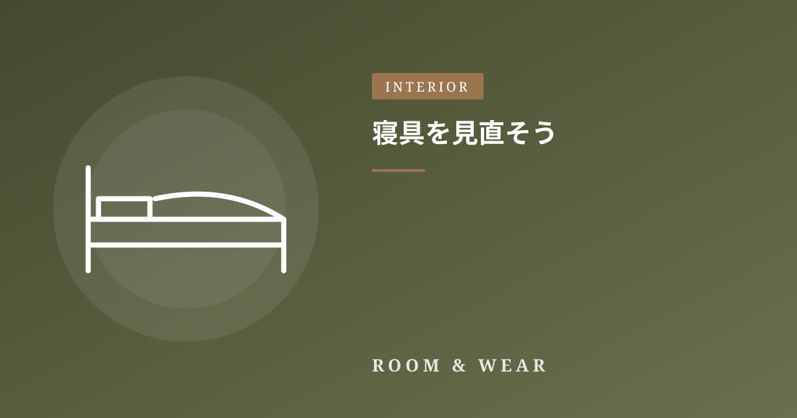

寝具を見直そう。マットレス・枕・掛け布団の選び方の基本

※この記事にはアフィリエイトリンクが含まれています（広告について）。
寝具は1日の3分の1近くを過ごす場所なのに、引っ越しのときに買ったまま…という人も多いアイテムです。ここではマットレス・枕・掛け布団を選ぶときに知っておきたい基本を紹介します。
マットレス：かたさと厚みを見る
マットレスはやわらかすぎると体が沈み込み、かたすぎると体の一部に圧がかかりやすくなります。商品ページでは「かたさ（ニュートン表記など）」と「厚み」を確認しましょう。床に直接敷く場合は、底つき感が出にくいよう、ある程度厚みのあるものがおすすめです。
種類としては、ばねを使ったコイルマットレスと、ウレタンなどを使ったノンコイルマットレスがあります。ノンコイルは軽く、丸めて届くタイプも多いので、一人暮らしの部屋に運び込みやすいのがメリットです。
枕：高さが調整できるものが安心
枕は合う高さに個人差が大きいアイテムです。中材を出し入れしたり、シートを抜き差ししたりして高さを調整できるタイプなら、使いながら自分に合う高さを探せます。
掛け布団：季節に合わせて使い分ける
冬は羽毛布団、夏は薄手の肌掛けやタオルケット、と季節で使い分けるのが基本です。羽毛布団はダウンジャケットと同じくダウン率が高いほど軽くて暖かいとされています。洗いやすさを重視するなら、家で洗えるポリエステル素材も選択肢になります。
見た目も整えるなら
シーツや布団カバーの色を部屋のベースカラーに合わせると、ベッドまわりがすっきりまとまります。グレー・ネイビー・ベージュなどの落ち着いた色は、男性の部屋にもなじみやすい色です。
条件別に選んだ3点
記事の順番どおり「マットレスのかたさ」「枕の高さ」「カバーの色」で、商品ページに数値や仕様が書かれているものを選びました。仕様は2026年11月17日にAmazonの販売ページで確認した内容です。編集部が実際に使用したレビューではありません。購入前に最新の情報をご確認ください。
| 商品 | 種類 | サイズ | ポイント |
|---|---|---|---|
| タンスのゲン 「純」高反発マットレス シングル 厚さ10cm 13810016 | マットレス | 97×195×10cm | 210N・30D |
| 西川 スリープフィットネス 枕 ソフトパイプ L | 枕 | 48×38×6cm | 高さ調整・丸洗い |
| クモリ 寝具カバー 3点セット シングル | カバー | シングル・3点 | ダークグレー |
マットレス
タンスのゲン 「純」高反発マットレス シングル 厚さ10cm 13810016（パイルブラウン）
- サイズ
- 幅97×長さ195×厚み10cm
- かたさ
- 210N（販売ページ記載）
- 密度
- 30D
- 中材
- 高反発ウレタンフォーム
- 重量
- 約6.8kg
- 特徴
- かたさ（ニュートン）と密度が数値で書かれているノンコイルマットレス。
- 向いている人
- 床やすのこに直接敷けるマットレスを、かたさの数値を見て選びたい人
- 注意点
- 記載のかたさは210Nで、かためです。やわらかい寝心地が好みの人には合わない可能性があります。
- 価格
- 価格・在庫は変動するため掲載していません（販売ページの確認日：2026年11月17日）。
枕
西川 スリープフィットネス 枕 ソフトパイプ L（アイボリー）
- サイズ
- 48×38×6cm
- 側地
- ポリエステル100%
- 詰めもの
- ポリエチレンパイプ
- 高さ調整
- 可能（販売ページ記載）
- 洗濯
- 洗濯機で丸洗い可（ネット使用）
- 特徴
- 中のパイプで高さを調整できる枕。洗濯機で丸洗いできる。
- 向いている人
- 自分に合う枕の高さがまだ分からず、使いながら調整したい人
- 注意点
- パイプ素材のため、寝返りのときに音が気になる場合があります。
- 価格
- 価格・在庫は変動するため掲載していません（販売ページの確認日：2026年11月17日）。
カバー
クモリ 寝具カバー 3点セット シングル（ダークグレー）
- 内容
- 掛け布団カバー150×210cm・ボックスシーツ100×200cm・枕カバー43×63cm（1枚）
- 素材
- ポリエステル
- 色
- ダークグレー
- 使い方
- 洋式・和式兼用
- 特徴
- 掛け布団カバー・シーツ・枕カバーを同じ色でそろえられるセット。
- 向いている人
- ベッドまわりを落ち着いた色でまとめたい人
- 注意点
- 素材はポリエステルです。綿の肌ざわりを重視する人は素材を確認してください。枕カバーは43×63cm用なので、手持ちの枕のサイズと合うか確認してください。
- 価格
- 価格・在庫は変動するため掲載していません（販売ページの確認日：2026年11月17日）。
まとめ
寝具は「マットレスのかたさ」「枕の高さ」「季節に合った掛け布団」の順で見直すのがおすすめです。通販で買う場合は、返品・交換の条件も事前に確認しておきましょう。
この記事に関連するアイテムを探す
Amazonの検索結果ページに移動します。条件に合う商品を比較してお選びください。
- ノンコイルマットレスAmazonで商品を探す
- 高さ調整できる枕Amazonで商品を探す
- 布団カバーセット（グレー）Amazonで商品を探す
価格・在庫・仕様は変わることがあります。購入前にAmazonの商品ページで最新の情報をご確認ください。